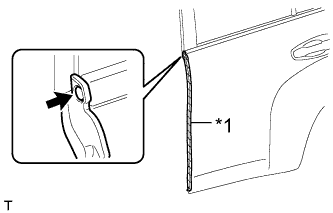
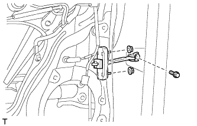

REAR DOOR > REASSEMBLY |
| 1. INSTALL REAR DOOR OUTSIDE STRIPE LH |
 |
| Item | Temperature |
| Vehicle Body | 40 to 60°C (104 to 140°F) |
| Outside Stripe | 20 to 30°C (68 to 86°F) |
Refer to the illustration to position a new rear door outside stripe.
| Area | Specified Condition |
| A | +/-1.0 mm (0.039 in.) from end |
| 2. INSTALL BLACK OUT TAPE LH |
| Item | Temperature |
| Vehicle Body | 40 to 60°C (104 to 140°F) |
| Black Out Tape | 20 to 30°C (68 to 86°F) |
Refer to the illustration to position new black out tape.
| Area | Specified Condition |
| A | +/-1.0 mm (0.039 in.) from end |
| 3. INSTALL REAR DOOR LOWER OUTSIDE STRIPE LH |
| Item | Temperature |
| Vehicle Body | 40 to 60°C (104 to 140°F) |
| Outside Stripe | 20 to 30°C (68 to 86°F) |
Refer to the illustration to position a new rear door lower outside stripe.
| Area | Specified Condition |
| A | +/-1.0 mm (0.039 in.) from end |
| 4. INSTALL NO. 2 BLACK OUT TAPE LH |
| Item | Temperature |
| Vehicle Body | 40 to 60°C (104 to 140°F) |
| Black Out Tape | 20 to 30°C (68 to 86°F) |
Refer to the illustration to position new No. 2 black out tape.
| Area | Specified Condition |
| A | 2.0 to 4.0 mm (0.078 to 0.158 in.) |
| B | 4.0 to 6.0 mm (0.157 to 0.236 in.) |
| 5. INSTALL REAR DOOR FRONT WINDOW FRAME MOULDING LH |
| Item | Temperature |
| Vehicle Body | 40 to 60°C (104 to 140°F) |
| Window Frame Moulding | 20 to 30°C (68 to 86°F) |
Clean the vehicle body surface.
Using a heat light, heat the vehicle body surface.
Remove the double-sided tape from the vehicle body surface.
Wipe off any tape adhesive residue with cleaner.
Install a new rear door front window frame moulding.
Using a heat light, heat a new rear door front window frame moulding and the vehicle body surface.
Remove the peeling paper from the face of the rear door front window frame moulding.
Attach the clip and double-sided tape to install the rear door front window frame moulding.
Install a new door window frame moulding clip.
| 6. INSTALL REAR DOOR BELT MOULDING LH |
Attach the 7 claws to install the rear door belt moulding.
| 7. INSTALL REAR DOOR PANEL CUSHION |
Attach the clip to install a new door panel cushion.
| 8. INSTALL REAR DOOR NO. 3 WEATHERSTRIP LH |
Using a heat light, heat the vehicle body surface.
| Item | Temperature |
| Vehicle body | 40 to 60°C (104 to 140°F) |
| rear door No. 3 weatherstrip | 20 to 30°C (68 to 86°F) |
Remove the double-sided tape from the vehicle body.
Wipe off any tape adhesive residue with cleaner.
|  |
Temporarily install a new rear door No. 3 weatherstrip with a new clip.
| *1 | Double-sided Tape |
Install the rear door No. 3 weatherstrip.
| 9. INSTALL REAR DOOR NO. 2 WEATHERSTRIP LH |
Attach the 6 clips and guide to install the rear door No. 2 weatherstrip.
| 10. INSTALL REAR DOOR WEATHERSTRIP LH |
Attach the 19 clips and guide to install the rear door weatherstrip.
| 11. INSTALL REAR DOOR CHECK ASSEMBLY LH |
Apply MP grease to the sliding areas of the rear door check assembly.
|  |
Install the door check to the door panel with the 2 nuts.
Apply adhesive to the threads of the bolt.
Install the door check to the body panel with the bolt.
| 12. INSTALL REAR DOOR OUTSIDE HANDLE FRAME SUB-ASSEMBLY LH |
Apply MP grease to the sliding parts of the rear door outside handle frame sub-assembly.
 |
Attach the door handle nut and claw.
Using a T30 "TORX" socket wrench, install the rear door outside handle frame sub-assembly with the screw.
| 13. INSTALL REAR DOOR NO. 2 OUTSIDE HANDLE PAD LH |
Attach the 2 claws to install the rear door No. 2 outside handle pad.
| 14. INSTALL REAR DOOR NO. 1 OUTSIDE HANDLE PAD LH |
Attach the 3 claws to install the rear door No. 1 outside handle pad.
| 15. INSTALL REAR DOOR OUTSIDE HANDLE ASSEMBLY LH |
 |
Insert the front end of the rear door outside handle assembly into the rear door outside handle frame.
Insert the rear end of the rear door outside handle assembly into the rear door outside handle frame. Next, slide the rear door outside handle assembly toward the front of the vehicle to install it.
Move the lever in the direction indicated by the arrow in the illustration to lock the door outside handle assembly.
| 16. INSTALL REAR DOOR OUTSIDE HANDLE COVER LH |
Attach the claw to install the rear door outside handle cover.
Using a T30 "TORX" socket wrench, install the rear door outside handle cover with the screw.
| 17. INSTALL REAR DOOR INSIDE LOCKING CABLE ASSEMBLY LH |
Install the rear door inside locking cable assembly.
Attach the 3 claws.
| 18. INSTALL REAR DOOR LOCK REMOTE CONTROL CABLE ASSEMBLY LH |
Install the rear door lock remote control cable assembly.
Attach the claw.
| 19. INSTALL REAR DOOR LOCK ASSEMBLY LH |
Apply MP grease to the sliding parts of the rear door lock assembly.
 | Slide |
Install a new door lock wiring harness seal to the rear door lock assembly.
Insert the rear door lock assembly into the rear door outside handle release plate, and set it on the rear door panel.
Check that the rear door outside handle frame release plate is securely connected to the rear door lock assembly.
Using a T30 "TORX" wrench, install the rear door lock assembly with the 3 screws.
| 20. INSTALL POWER WINDOW REGULATOR MOTOR ASSEMBLY LH |
Apply MP grease to the sliding and rotating areas of the regulator motor.
Using a T25 "TORX" socket wrench, install the power window regulator motor with the 3 screws.
| 21. INSTALL REAR DOOR WINDOW REGULATOR SUB-ASSEMBLY LH |
Apply MP grease to the sliding parts of the rear door window regulator sub-assembly.
Install the temporary bolt to the rear door window regulator sub-assembly.
 |
Temporarily install the rear door window regulator assembly with the temporary bolt.
| *1 | Temporary Bolt |
Temporarily install the 3 bolts, and then tighten the temporary bolt and 3 bolts in the order shown in the illustration.
| 22. INSTALL REAR DOOR GLASS CHANNEL FILLER |
Apply soapy water to a new rear door glass channel filler.
| Area | Specified Condition |
| A | 21 mm (0.827 in.) |
| B | 22.5 mm (0.886 in.) |
| *a | Front Side |
| *b | Rear Side |
Install the rear door glass channel filler to the position shown in the illustration.
| 23. INSTALL REAR DOOR GLASS CHANNEL SUB-ASSEMBLY LH |
Apply soapy water to a new rear door glass channel sub-assembly.
| Area | Specified Condition |
| A | 21 mm (0.827 in.) |
| B | 22.5 mm (0.886 in.) |
| *a | Front Side |
| *b | Rear Side |
Install the rear door glass channel sub-assembly to the position shown in the illustration.
| 24. INSTALL REAR DOOR GLASS SUB-ASSEMBLY LH |
Connect the cable to the negative (-) battery terminal and rear power window regulator motor connector.
 |
Connect the power window regulator switch assembly and move the arm of the regulator so that the roller on the arm can be seen through the service hole.
Disconnect the power window regulator switch assembly and rear power window regulator motor connector.
Disconnect the cable from the negative (-) battery terminal.
| Condition | Waiting Time |
| Vehicle enrolled in G-BOOK system | 6 minutes |
| Vehicle not enrolled in G-BOOK system | 1 minute |
 |
Insert the rear door glass sub-assembly into the rear door panel along the rear door glass run as indicated by the arrow in the illustration.
| 25. INSTALL REAR DOOR QUARTER WINDOW WEATHERSTRIP LH |
Install the rear door quarter window weatherstrip to the rear door quarter window glass.
| 26. INSTALL REAR DOOR QUARTER WINDOW GLASS LH |
 |
Install the rear door quarter window glass together with the rear door quarter window weatherstrip in the direction indicated by the arrow in the illustration.
| 27. INSTALL REAR DOOR FRAME GARNISH LH |
Attach the clip to install a new door frame garnish.
| 28. INSTALL REAR DOOR WINDOW DIVISION BAR SUB-ASSEMBLY LH |
Insert the rear door window division bar sub-assembly from above.
Install the rear door window division bar sub-assembly to the glass run.
Install the temporary bolt to the rear door window division bar sub-assembly.
Install the rear door window division bar sub-assembly.
Install the 2 bolts and screw.
Tighten the temporary bolt to install the rear door window division bar sub-assembly.
| 29. INSTALL REAR DOOR GLASS RUN LH |
Install the glass run.
| 30. INSTALL REAR DOOR SERVICE HOLE COVER LH |
Apply new butyl tape to the rear door panel.
 |
Pass the rear door lock remote control cable assembly and rear door inside locking cable assembly through a new rear door service hole cover.
Attach the rear door service hole cover using to the reference points on the rear door panel.
| *1 | Reference Point |
Connect the connector.
Attach the 2 clamps to the rear door wire.
| 31. INSTALL REAR SPEAKER ASSEMBLY |
Temporarily install the speaker by attaching the 2 claws of the speaker to the door panel.
Install the rear speaker with the 3 screws in the order shown in the illustration.
Connect the connector.
| 32. INSTALL REAR DOOR INSIDE HANDLE SUB-ASSEMBLY LH |
Insert the edge of the assist grip from the front of the trim and rotate the assist grip together with the inside handle sub-assembly to attach the 2 guides.
Attach the 9 guides to install the assist grip together with the inside handle sub-assembly.
Install the 14 screws.
| 33. INSTALL REAR NO. 2 SPEAKER ASSEMBLY (for 14 Speakers) |
Align the speaker with the door position pins labeled A.
Install the rear No. 2 speaker with the 2 screws.
| 34. INSTALL REAR DOOR INSIDE HANDLE ILLUMINATION LIGHT ASSEMBLY LH |
Connect the connector.
Attach the claw to install the light.
| 35. INSTALL NO. 2 COURTESY LIGHT ASSEMBLY |
Connect the connector.
Attach the 2 claws to install the light.
| 36. INSTALL REAR POWER WINDOW REGULATOR SWITCH ASSEMBLY |
Attach the 2 claws to install the rear power window regulator switch assembly.
| 37. INSTALL REAR DOOR INNER GLASS WEATHERSTRIP LH |
 |
Attach the 3 claws to install the rear door inner glass weatherstrip as shown in the illustration.
| 38. INSTALL REAR DOOR TRIM BOARD SUB-ASSEMBLY LH |
 |
Install the clamp to the door panel.
Connect the rear door lock remote control cable assembly and rear door inside locking cable assembly.
Connect each connector.
Attach the rear door trim board sub-assembly by attaching the 4 claws of the rear door inner glass weatherstrip as shown in the illustration.
Attach the 9 clips and install the rear door trim board sub-assembly.
Install the 3 screws.
| 39. INSTALL REAR POWER WINDOW REGULATOR SWITCH ASSEMBLY WITH REAR DOOR ARMREST BASE PANEL |
Connect the connector.
Attach the 2 clips, 4 claws and guide to install the rear power window regulator switch assembly with rear door armrest base panel.
| 40. INSTALL REAR ARMREST ASSEMBLY LH |
Attach the 7 claws and 7 guides to install the rear armrest assembly.
| 41. INSTALL REAR DOOR INSIDE HANDLE BEZEL PLUG LH |
Attach the 3 claws to install the rear door inside handle bezel plug.
| 42. CONNECT CABLE TO NEGATIVE BATTERY TERMINAL |
| 43. INITIALIZE POWER WINDOW CONTROL SYSTEM |
Initialize the power window control system (Click here).